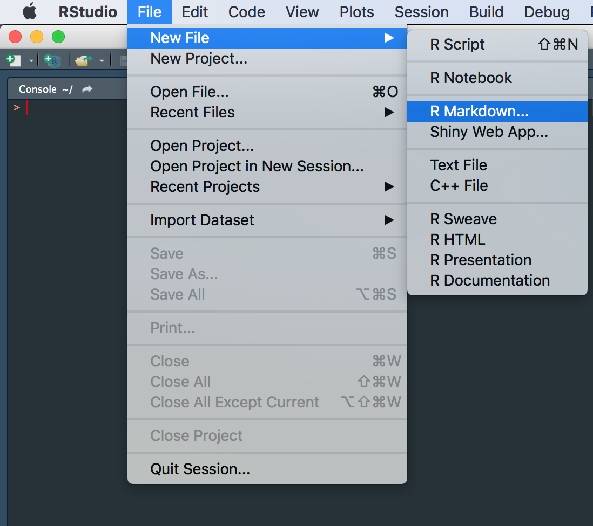
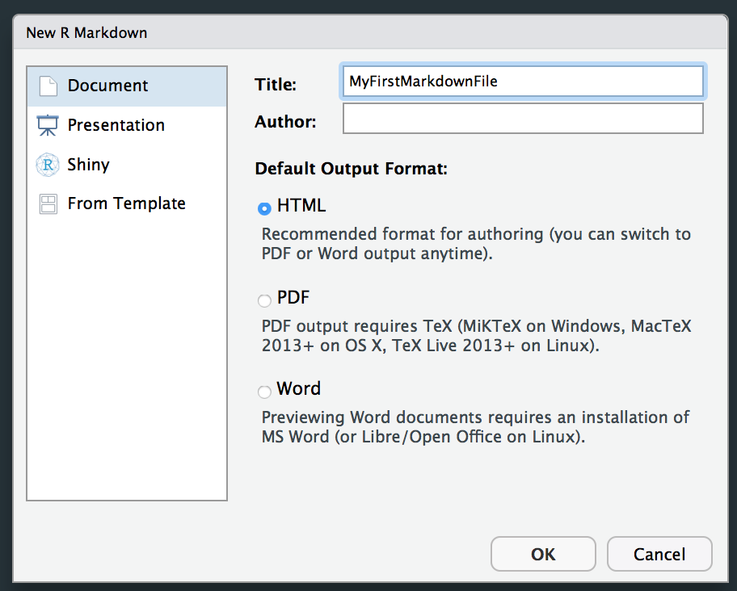
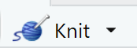
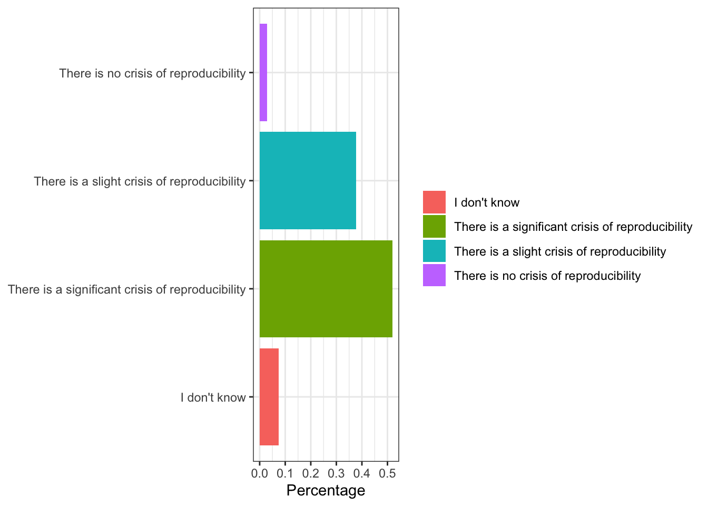
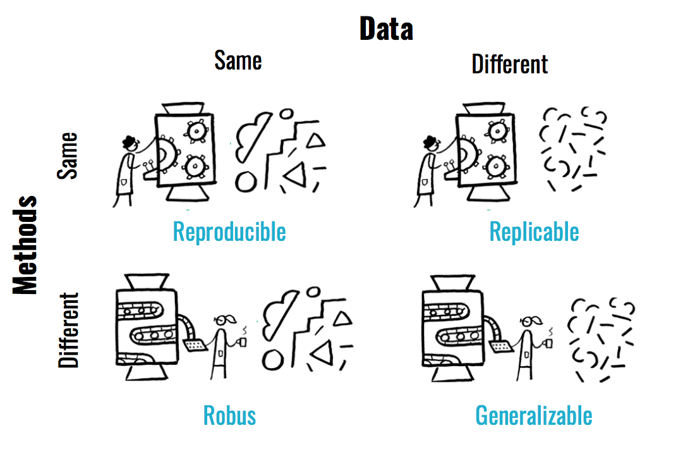
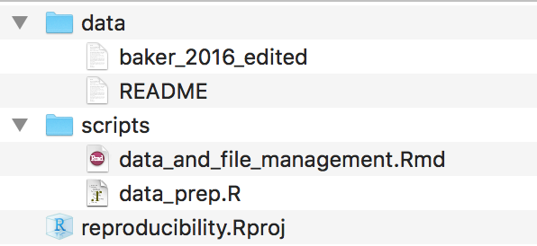

Overview
R Markdown is a great tool to document and share your work! R Markdown documents allow you to combine text, and code, images.
Let’s create your first R Markdown documents.

This should prompt a dialog that allows you to choose whether you want your output to be in html, pdf or word format. For now, we will go with html, but you can always change this later.

This will provide you with a template for an R Markdown document. In this file, you will be able to write code and text, and even import images in R Studio. Sounds pretty awesome, doesn’t it? Let’t chickly safe the file so that we don’t loose anything. Click on File - Save and give it a filename.
Now to really make things look pretty (aka compile the html document) we need to knit the file. In order to do so, simply click on knit on the top left.

Let’s get starting filling this document with some content, but first of all, we should get rid of all the template content provided. Make sure to keep the header, and the piece of code that set’s up the structure of the document, but delete everything below. You should just be left with this bit of the code:
---
title: "Intro to R Markdown"
output: html_document:
---
```{r setup, include=FALSE}
knitr::opts_chunk$set(echo = TRUE)
```Using R Markdown documents to write reports will likely mean you will want to include some text.
You can structure your reports by including headings and subsections. Headings are added by adding a # before your heading. Adding more # makes your heading a sub(or sub, or sub-sub-) heading.
## Heading 2
### Heading 3
#### Heading 4Which should look like this:
Give this a try. Create a couple of headings in your report and type some text below.
You create paragraphs by leaving an empty line between sentences. That is to say simply hitting enter won’t do the job, you actually need to leave an empty line.
This is your first sentence.
This will NOT be a new paragraph.
This however will be one!Which looks like so:
This is your first sentence. This will NOT be a new paragraph.
This however will be one!
Give this a try with the text you have added before. Create some paragraphs and subsections.
You can include lists - both unstructured and structured:
* It creates trust in research results
* It is the responsible thing to do with public research funding
* It is efficient
+ reduces the costs of duplication
+ allows more research from the same data
* It allows knowledge transfer through fast, international, collaborative efforts
* ....Thoughts on why open and reproducible research is the future:
1. Research results are strengthened if they are reproduced and confirmed by several independent researchers.
2. Researchers can build on one anothers results.
3. Well documented analyses allow to write papers more easily.
4. Well documented analyses and open data allow for continuity of research. You can make text italic (*italic*) or bold (**bold**), and include inline code (`code`).
You can also include links [text](link), i.e. [Cambridge Neuroscience](https://www.neuroscience.cam.ac.uk) get’s you to Cambridge Neuroscience.
Lastly, you can of course include quotes:
Open research aims to transform research by making it more reproducible, transparent, reusable, collaborative, accountable, and accessible to society. (The Turing Way Community, 2019)
Here is an overview of the in-text features R Markdown allows for:
| Feature | R Markdown | Rendered |
|---|---|---|
| superscript | 2^nd^ |
2nd |
| subscript | CO~2~ |
CO2 |
| strikethrough | ~~mistake~~ |
|
| bold | **bold** |
bold |
| italics | *italics* |
italics |
| code | `code` |
code |
| links | [text](http:://www.example.com/your-link-goes-here) |
text |
| images |  |
 |
The great thing about R Markdown is that you can add code directly into your report. This will allow you to add plots - and even show the code that produced it.
You can add codeblocks either by clicking on Code > Insert Chunk, or by adding the following directly:
```{r }
```For this demonstration, we are using data from 1,500 scientists lift the lid on reproducibility , (Baker, 2016). Check out the article here. The original data is available through figshare. For this practical, download this edited version. Unzip the folder and place the file baker2016-edited.csv into a folder data/ (or change the paths below).
Go ahead and create a new code chunk. In that code chunk, type the following to load in the data:
# read in data
questionnaire = read.csv('data/baker2016-edited.csv')As a first step, we probably want to get an idea of what the data looks like. The dataframe is pretty big, so I suggest you select a few columns to display as such:
head(questionnaire)If you now knit the file, you should see the head of the dataframe displayed:
## id familiar_reproducibility crisis_agree
## 1 24 Fairly familiar There is a slight crisis of reproducibility
## 2 27 Very familiar There is a slight crisis of reproducibility
## 3 36 Very familiar There is a significant crisis of reproducibility
## 4 107 Very familiar There is a significant crisis of reproducibility
## 5 112 Fairly familiar There is a slight crisis of reproducibility
## 6 114 Very familiar There is a significant crisis of reproducibility
## job field
## 1 Research Scientist Other
## 2 Student Other
## 3 Associate professor/Lecturer Other
## 4 Principal Investigator Biology
## 5 PhD Student Biology
## 6 PhD Student OtherHowever, we also see the code you used to produce the table. If you just want to show your readers an overview of the dataframe, you won’t need to show the code. We can hide it, by adding the option echo=F to your code chunk like this:
```{r echo = F}
```While the code above works well to demonstrate some options in R Markdown, the table that is output does not actually look too pretty. Let’s change that. The knitr::kable() function allows you to easily create pretty tables. Try out changing the above head(questionnaire[,c(1,11,28,29)]) to:
knitr::kable(
head(questionnaire), # This is the table we will plot
booktabs = TRUE, # We determine the formatting style as 'booktabs'
caption = 'A table that now looks much prettier.') # Here we are adding a caption | id | familiar_reproducibility | crisis_agree | job | field |
|---|---|---|---|---|
| 24 | Fairly familiar | There is a slight crisis of reproducibility | Research Scientist | Other |
| 27 | Very familiar | There is a slight crisis of reproducibility | Student | Other |
| 36 | Very familiar | There is a significant crisis of reproducibility | Associate professor/Lecturer | Other |
| 107 | Very familiar | There is a significant crisis of reproducibility | Principal Investigator | Biology |
| 112 | Fairly familiar | There is a slight crisis of reproducibility | PhD Student | Biology |
| 114 | Very familiar | There is a significant crisis of reproducibility | PhD Student | Other |
Perfect. Let’s plot some data. Create a new code chunk and paste this code into it. Make sure you have the ggplot2 library installed. If you haven’t, install it first by typing install.packages('ggplot2') into the console. Don’t worry if you are not familiar with ggplot syntaxt yet, just copy and paste the code.
library(ggplot2)
ggplot(questionnaire, aes(x=crisis_agree, fill = crisis_agree))+
geom_bar(aes(y = (..count..)/sum(..count..)))+
ylab('Percentage')+
coord_flip()+
theme_bw()+
theme(legend.title = element_blank(),
axis.title.x = element_blank())This should create a plot like this:

Don’t want people to see your code? Remember to add echo = F. Find the output too big? You can decide on the exact dimensions (in inches) by adding fig.width = 3, fig.height = 2. Alternatively, you could scale it to a percentage of the original dimensions using: out.width = '50%'. Lastly, decide how the figure should aligned using fig.align = 'center'. Go ahead and give some of these options a try.
Sometimes you may want to include an external image. I have added an image you could load in here to the img folder.
You can include the image by adding an image title and the path to your image as such: . Note that you can control the size of the image included by adding a scaling factor, i.e. {width=50%}.

Now that we actually have created some content, let’s look at some styling options for our document. The YAML header is the bit of code in the very beginning of your document:
---
title: "MyFirstMarkdownFile"
output: html_document
---Basically, YAML is like configuration code for your document. Here, we can determine a whole range of options. You might be interested to add a table of contents to your file:
---
title: "MyFirstMarkdownFile"
output:
html_document:
toc: true
---You could decide to number your sections:
---
title: "MyFirstMarkdownFile"
output:
html_document:
toc: true
number_sections: true
---You could predetermine the size of the figures in your report so as to not have to set them again in each code chunk:
---
title: "MyFirstMarkdownFile"
output:
html_document:
toc: true
number_sections: true
fig_width: 7
fig_height: 6
fig_caption: true
---And you can choose from a number of themes as well as code syntax highlighting options. - theme determines the overall style. There are 12 themes you can use without installing any additional packages: cerulean, cosmo, flatly, journal, lumen, paper, readable, sandstone, simplex, spacelab, united, and yeti. - highlight allows you to determine the syntax highlighting for the code you include, making it easier to read. Try out a few of default, tango, pygments, kate, monochrome, espresso, zenburn, haddock, breezedark, and textmate.
For even more themes you could use, check out this theme guide.
---
title: "MyFirstMarkdownFile"
output:
html_document:
toc: true
number_sections: true
fig_width: 7
fig_height: 6
fig_caption: true
theme: journal
highlight: tango
---Summary
Are you still using file paths of the like of /Users/Lena/Documents/...? Please don’t! File paths like this mean that running your scripts on any computer other than your own becomes a path-setting-exercise. One thing that is great about R projects is that paths work relative to the location of the R project.
Imagine this was your folder structure:

If we open our R project reproducibility.Rproj, we can use file paths relative to it’s location. So rather than having to navigate to baker_2016_edited with an absolute file path like: /Users/Lena/Documents/.../data/baker_2016_edited, we can now simply use /data/baker_2016_edited. Apart from the obvious advantage that this requires less typing, it also makes your file paths reproducible on any machine!
If you haven’t done so yet, create an R project and try navigating to files in the console in R Studio.
Here is a small drawback of R Markdown files though: They act like their own little universe, so all file paths in R Mardown files work relative to the location of them, rather than of the project. That’s annoying if you are working in scripts/data_and_file_management.Rmd and want to load in a file from data/....
Fortunately, there is an easy fix: the here package. here() allows you to set paths relative to the root of your R project. So from within my scripts/data_and_file_management.Rmd file, I could say here('data/baker_2016_edited').
To make this more clear, try out the following:
here package and load the library.here()
getwd()While getwd() should differ between being run on the console and from withing a R Markdown file located in a subdirectory of the project, here() should be the same!
This cheatsheet is a great resource to have at hand when you get started.
Here you find details on many more options to stylize your reports than we have discussed here.
Lastly, check out the ‘Definite Guide to R Markdown’.